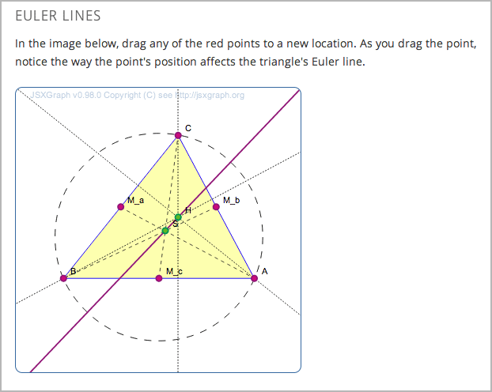

一个IFrame可以使你将其他任何网站中的工具或者不评分的练习整合进你的课程中。 IFrame是一个HTML组件，练习和工具则嵌入在IFrame中。 IFrame可以嵌入您自己的工具或第三方工具。
IFrame非常适合那些展示一个概念但不会用来评分或者存储学生数据的工具。 如果你需要添加可以评分的工具或者练习时，请以 custom JavaScript problem 或者 LTI component 这两种方式添加工具。
点击 IFrame specification 了解更多关于IFrame的信息。
要添加练习或者工具到一个IFrame中，你需要首先创建一个IFrame HTML组件，并添加包含练习或工具页面的URL到该组件中。 你也可以在IFrame的前面和后面添加文字和图片。
Note
包含练习或者工具页面的URL必须以 https 开头，而不是 http。 如果URL 是以 http 开头，那么你必须和该页面的所有者合作，来找出是否有一个 https 版本的页面。 有些网站不允许他们的内容被嵌入的IFrames。
在 添加新的组件 下， 点击 html， 再点击 IFrame 。
点击出现的新组件中的 编辑 。
点击工具栏组件编辑器中的 HTML 。
在HTML源代码编辑器中找到下面的HTML。 这段HTML包括了 <iframe> 元素:
<p><iframe src="https://studio.edx.org/c4x/edX/DemoX/asset/eulerLineDemo.html" width="402" height="402" marginwidth="0" marginheight="0" frameborder="0" scrolling="no">You need an iFrame capable browser to view this.</iframe></p>
<iframe> 起始和结束标记间的文本。 学生只会在他的浏览器不支持IFrame时才会看到这段文字。要更改你IFrame的设置，你需要添加，删除或者修改<iframe>起始标记中的属性。<iframe>标记 必须 有 src 属性指定你想要的网页的URL。 其它属性都是可选的。
你可以按任何你想要的顺序添加这些属性。
| 属性 | 描述 |
|---|---|
| src (必须) | 指定包含练习和工具的页面。 |
| width and height (可选) | 以像素或以百分比为单位，指定该IFrame的宽度和高度。 要以像素为单位指定的值，输入数字。要指定百分比，请输入数字后跟一个百分号。 如果不指定宽度和高度，该IFrame使用该链接的页面设置的尺寸。 这些尺寸会随网站发生变化。 如果更改的IFrame的宽度和高度，则该链接的页面的内容可能被调整大小，或仅有内容的一部分可以被显示。 |
| marginwidth and marginheight (可选) | 指定IFrame的边缘到你的练习或者工具之间空间的大小，以像素为单位。 |
| frameborder (可选) | 指定是否显示IFrame周围的边框中。如果值是0，则无边框。如果该值是任意正数，会出现一个边框。 |
| scrolling (可选) | 如果IFrame的大小小于嵌入它的练习或者工具，就可以指定滚动条是否出现，帮助用户看到所有的IFrame的内容。 例如，如果你IFrame中的内容是非常高的，你可以设置IFrame的高度为一个较小的数字，并为用户添加一个垂直滚动条，如下面的第一张图像。 |
下面的例子对比了 <iframe> 中每个元素的不同对IFrame带来的影响和变化。
.. code-block:: html
<p><iframe src=”https://studio.edx.org/c4x/edX/DemoX/asset/eulerLineDemo.html” width=”442” height=”200” marginwidth=”20” marginheight=”20” frameborder=”1” scrolling=”yes”>You need an iFrame capable browser to view this.</iframe></p>
<p><iframe src="https://studio.edx.org/c4x/edX/DemoX/asset/eulerLineDemo.html" width="550" height="250" marginwidth="30" marginheight="60" frameborder="1" scrolling="no">You need an iFrame capable browser to view this.</iframe></p>
有关IFrame的属性的详细信息，请参阅 IFrame specification.
{kind=link}
{kind=link}
{kind=link}